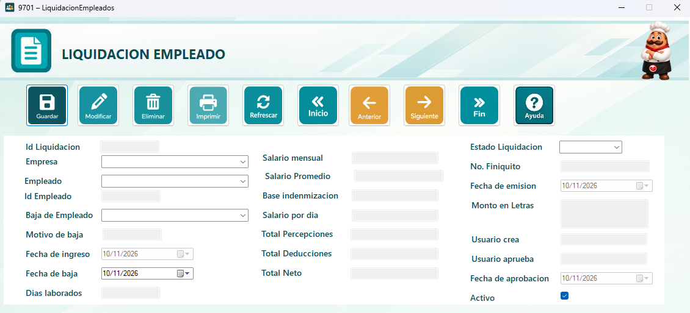
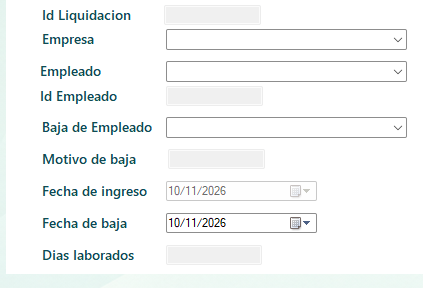
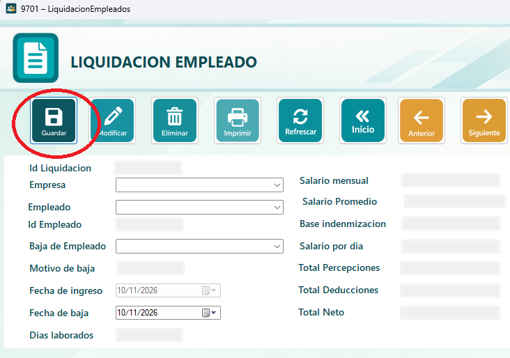
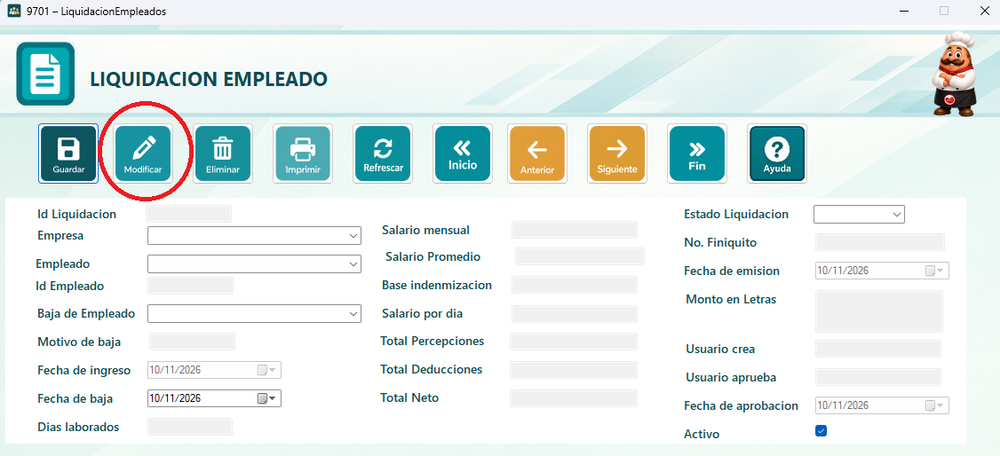

El módulo de Liquidación del Empleado calcula lo que corresponde pagar cuando un colaborador termina su relación laboral: sueldo pendiente, aguinaldo, bono 14, vacaciones no gozadas e indemnización si aplica.
Por ejemplo, un empleado que renuncia el 15 de noviembre recibe la parte proporcional de aguinaldo y bono 14, las vacaciones pendientes y el sueldo de los días laborados. Al guardar, su estado cambia a inactivo en Empleados.

Presione Ingresar, seleccione el empleado, la fecha de salida y el motivo (renuncia, despido o fin de contrato). El sistema calcula automáticamente cada concepto; revíselos y presione Guardar para generar la liquidación.

Una vez completados los datos, presione el botón Guardar. Si el registro es único, el sistema mostrará un mensaje confirmando que la grabación fue exitosa.

1. Seleccione la fila completa que desea cambiar, actualice los datos necesarios y presione Modificar.
2.Los datos se cargarán en el detalle.
3. Realice los cambios necesarios.
4. Presione el botón Modificar. El sistema mostrará un mensaje confirmando el cambio y actualizará la fecha de última modificación

En el formulario se encuentran los botones de navegación, que le permiten desplazarse entre los registros: primero, anterior, siguiente y último.

Presione el botón Reporte para abrir una ventana con el listado de registros del módulo: empleado, fecha de salida, motivo, conceptos, total a pagar y fecha de liquidación.
Desde la barra superior del reporte puede desplazarse entre páginas, actualizar la información, ajustar el zoom, buscar un texto, imprimirlo o exportarlo.